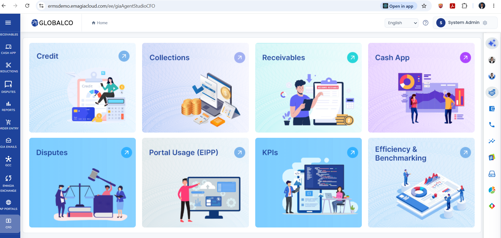
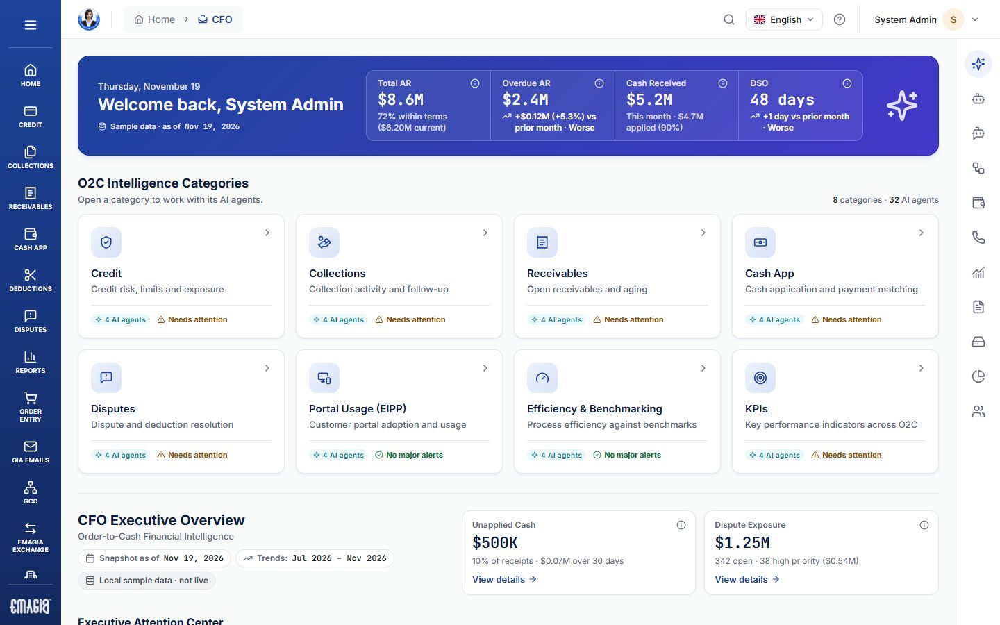

From Fragmented AI Development to a Unified Enterprise Product
Emagia's application already carries valuable O2C functionality. As more developers and AI coding tools contribute, visual and interaction patterns have drifted apart between modules. We propose design governance and a controlled, incremental implementation — starting with the CFO module.
Pilot: CFO moduleNo full rebuildMeasured outcomes

Before · ERMS demo

After · CFO prototype (sample data)
STEP 1Existing applicationKeep the business logic and APIs
STEP 5Controlled rolloutModule by module, after approval
“We do not need to rebuild everything to improve the product. We need a consistent design foundation and a controlled transformation strategy.”Central proposal of this presentation
02 · Current experience & root cause
The Challenge Is Not AI Adoption. It Is the Absence of Design Governance.
The two screens below are the CFO module as it runs today in the ERMS demo environment. They show what users meet first: the category entry screen and the agent workspace.
BeforeCFO category screen · ERMS demo
1Title and arrow only. No figures, agent count or status — the screen says where to go, not what needs attention.
2Illustration fills most of each tile, pushing all content below the fold on a laptop screen.
3Each tile has its own colour treatment, unrelated to the colours used elsewhere in the product.
BeforeCFO agent workspace · ERMS demo
1Every agent shows the same text (“You are an expert financial analyst speci…”) — the prompt is shown instead of a description.
2Low-contrast guidance is the only content in the Summary panel.
3Charts panel is blank, with no state or explanation.
4Breadcrumb shows only “Home” while the user is inside CFO.
5Application rail mixes photos, multi-colour and outline icons.
Visible in the screens
Navigation and information hierarchy differ between the category screen and the workspace.
Empty states are minimal or missing (blank Charts panel); there is no visible loading, error or success pattern.
Executive priorities — exposure, overdue amounts, what needs attention — are not on the first screen.
To confirm with a technical audit or user research
Whether the same inconsistencies repeat across other modules, and how often.
How much CSS and JavaScript is duplicated between AI-assisted implementations.
Which tasks CFO users actually prioritise, and where they get stuck.
Accessibility conformance (contrast, keyboard, screen reader) against WCAG 2.2 AA.
How inconsistency builds up A process gap, not a people problem
CAUSEMultiple developers and AI toolsEach starts from its own defaults
THENDifferent implementation patternsNo shared tokens or components to follow
THENInconsistent interfacesSame action, different look and place
THENFragmented user experienceUsers relearn each module
RESULTMaintenance and quality riskMore code to fix, more regressions
What it costs the user Expected effects; to be confirmed in baseline testing (Section 7)
Additional learning effortInconsistent navigationReduced predictabilityHigher cognitive loadFamiliar actions are harder to recognise
03 · CFO pilot case study
A Tangible Demonstration of Product Transformation
Same module, same eight categories. The “before” images are the ERMS demo; the “after” images are the new prototypes rendered in a browser — not mock-ups. All figures in the prototype are labelled sample data.
A · CFO Overview
BeforeCategory tiles
1Large illustrated tiles with a name only.
2Limited context: breadcrumb “Home”, no page title.
3No financial context — no AR, overdue, cash or DSO on the entry screen.
AfterExecutive overview
1Welcome banner with four key metrics — Total AR $8.6M, Overdue AR $2.4M, Cash Received $5.2M, DSO 48 days, each with a definition tooltip.
2Origin is always visible: “Sample data · as of …”.
3Eight O2C Intelligence Categories as the primary navigation, each with agent count and a status in icon + words.
4CFO Executive Overview with the remaining KPIs; every KPI appears once and links to its source agent.
5Executive Attention Center: critical and high items first, severity in text and icon, one action each.
6Honest framing: “Rule-based on sample data — not live monitoring”.
B · CFO Agent Workspace
BeforeAgent workspace
1Back arrow + category name; switching category means leaving the screen.
2Agents are hard to tell apart (identical prompt text).
3Limited guidance when no agent is selected.
4Large empty working areas — no chart state at all.
AfterAgent workspace
1Category tabs switch in place; breadcrumb shows Home › CFO › Receivables.
2Analysis controls: date range, presets, provider/model, Summarize (Ctrl+Enter).
3Searchable agents with real descriptions and a clear selected state.
4Summary card states range, “Model: Not called — local sample data” and time.
5Structured insights, risks, recommendations, each with value and source.
6Chart labelled sample data; bar / line / pie; PNG and CSV export.
7Suggested questions and a follow-up conversation per agent.
8Status feedback (“Summary ready”) in a consistent toast.
What improves Qualitative design assessment — not yet measured with users (see Section 7)
Discoverability
Categories show agent counts and status; agents are searchable and described in plain language.
Evidence: overview cards, agent search
Information hierarchy
Key metrics first, then navigation, then supporting KPIs, then exceptions — one clear reading order.
Evidence: four-section overview
Interaction consistency
One header, sidebar, picker and toast pattern shared by both pages, built from one token set.
Evidence: shared components folder
Financial readability
Values in a tabular monospace face; each figure has one value everywhere it appears.
Evidence: automated figure-consistency test
Workflow clarity
Every state is designed: ready, loading, result, empty, error — with the next step stated.
Evidence: workspace state model
Product extensibility
The UI talks to one data contract, so a real backend can replace sample data without redesign.
Evidence: CFO_SAMPLE data layer
04 · Emagia enterprise design guide
One Design Language. Every Module. Every Developer. Every AI Tool.
The CFO prototype already runs on one token set and a small shared component layer. The guide turns that foundation into an application-wide standard that people and AI coding tools both follow.
In the CFO prototypeProposed for the application-wide guideSpecimens below are drawn from the prototype's own tokens.
.t-h3Page titleInter 22/28 · 600
.t-h4Section and card titleInter 16/22 · 700
.t-h5Small headingInter 14/20 · 600
bodyBody text for descriptions and answersInter 14/20 · 400
.t-labelForm labelInter 12/16 · 600
.t-captionCaption and metadataInter 12/16 · 400
.font-data$8.6M · 48 days · 86%JetBrains Mono · tabular
Why two typefaces
Inter for interface text. JetBrains Mono for financial values, so digits line up in columns and amounts are scanned quickly.
In prototype
Radius
--r-xs 6
--r-control 8
--r-sm 10
--r-md 12
--r-lg 16
Elevation
--shadow-xs
--shadow-md
--shadow-lg
--shadow-float
Gap: spacing is not yet tokenised in the prototype (values are set per component). A spacing scale is part of the proposed guide.
Buttons
Prototype
SummarizeRegenerateCancelDisabled
Primary, secondary, ghost, disabled and icon-only (with an accessible name).
Inputs & selectors
Prototype
From21-10-2026
LLM ProviderOllama
Search agents
Shared calendar and select popup; native values and keyboard kept.
Pills & chips
Prototype
Today7D30DCustomWhy is overdue AR increasing?
Toggle presets (pressed state) and suggested questions.
Navigation
Prototype
HOMEREPORTSCFO
Shared sidebar: 14 items, active = white pill (shape, not colour alone). Shared header with breadcrumb, search, language, help, user menu.
Configured in one file per component; both pages load the same code.
Label, value in mono, one context line, link to the source agent.
Badges & severity
Prototype
CriticalHighMediumInformationalSample data
Status always in words + icon; only critical uses red.
Alerts
Prototype
High
$500K of received cash is unapplied
Impact $500K · Cash App
Ranked by severity, then value at stake; one action per row.
Tooltips
Prototype
DSO — days sales outstanding. Formula, comparison, target and source shown here.
Hover, focus or click; Esc closes.
Dialogs
Prototype
Edit prompt×
Prompt for AR Aging Analyst…
CancelSave
Native modal, focus trapped, focus returns to the trigger.
Feedback toast
Prototype
Summary ready
One function creates every toast; announced to screen readers.
Tables
Proposed
Bucket
Amount
Current
$6.20M
1–30 days
$1.05M
The prototype only has a chart data table; a full data-table standard (sort, filter, density) is to be defined with the ERMS table component.
Empty state
Prototype
Ready to summarizeSelect an agent, or press Summarize.
Every empty area says what to do next.
Loading state
Prototype
Skeleton + progress bar with Stop; respects reduced motion.
Error state
Prototype
Summary failed. Retry, or adjust the date range.
Retry
Shown only in an explicit preview mode in the prototype; recovery actions defined.
Rules
01One library: Lucide (v0.454 in the prototype), embedded as inline SVG — no icon fonts, no mixed sets. Prototype
02One stroke weight: 2px outline, round caps and joins. Prototype
03Standard sizes and alignment: 16 px inside controls, 20 px in navigation, centred on the text line. To formalise
04Semantic use: the same icon always means the same thing (e.g. database = sample data source). Decorative icons are hidden from screen readers. Prototype
05No photos or multi-colour icons in navigation rails. Proposed
States
Default
Hover
Active
Focus
Disabled
Keyboard navigation
Prototype Arrow keys in tabs and agent list, Ctrl+Enter to summarize, Ctrl/⌘+K global search, Esc closes the top layer.
Guide One shortcut map across modules; every action reachable without a mouse.
Focus states
Prototype A 2px primary focus ring (--ring) on every control; never removed.
Guide Same ring token everywhere; focus returns to the trigger after menus and dialogs.
Hover & selection
Prototype Light-blue selection plus a second cue (weight, check mark, underline or pill shape).
Guide Selection is never shown by colour alone.
Form validation
Prototype Invalid date range: inline message, fields marked invalid, focus moves to the first field, nothing runs.
Guide Validate inline, explain the fix, keep the user's input.
Error recovery
Prototype Retry, Stop and Regenerate; a stopped request restores the last good result.
Guide Every error offers a next step; no dead ends.
Responsive patterns
Prototype Breakpoints at 1280 / 1024 / 768 px: chart moves to a tab, sidebar becomes a drawer, single column on phones.
Guide Shared breakpoints and layout rules for every module.
Accessibility
Prototype Target WCAG 2.2 AA: labelled controls, live regions for status, chart data table, reduced motion.
Guide AA as a release criterion, checked in design QA and by audit.
Design tokens as source of truth
Prototype One :root token set (colour, radius, shadow, gradient, motion); primary #1E439B locked.
Proposed Tokens published once and consumed by code and Figma; spacing added.
Shared component library
Prototype Header, sidebar, application launcher and pickers are shared files, each configured in one place.
Proposed Reuse the ERMS React components (tabs, cards, tables, dialogs, toasts) instead of duplicating them.
Figma design library
Not yet No Figma library exists for this work today.
Proposed Figma variables and components mirroring the code tokens.
Frontend implementation guidelines
Prototype Written architecture and Design rules for the CFO pages.
Proposed Application-wide guidelines per component and pattern.
Design QA checklist
Prototype Verification checklist plus automated checks: one value per figure across summary, chart and chat; browser regression at desktop to phone widths.
Proposed Checklist in every pull request; design sign-off before merge.
AI coding prompt standards
Prototype Written instructions for AI coding assistants: change only what is asked, reuse tokens and classes, no redesign without approval, label sample data honestly.
Proposed One shared standard for every team and AI tool.
Version control & change approval
To establish Design changes are approved, but there is no common branch and review flow for User Experiance work yet.
Beyond Generating UI — Designing the Complete AI Product Experience
An AI feature is more than a chat box. The workspace prototype designs the whole path: find the right agent, set the context, read and trust the result, then ask, export and give feedback. These are 15 working interactions, grouped into four areas.
Implementation disclosure. The prototype runs on local sample data. The agent catalogue comes from CFO_SAMPLE.listAgents — four sample agents in each of eight categories. Provider and model selectors are configuration UI only: no LLM is called. Summaries and chat replies are local, rule-based sample responses, labelled as such. Nothing here is production AI, live data or measured AI accuracy.
AREA 1
Discover and select
01Eight O2C categoriesTabs in the workspace, cards on the overview
02Four sample agents per category32 agents, each with its own dataset and questions
03Agent discovery and selectionSearch by name, description or prompt; selected state; per-agent refresh
Sample dataGuided ready state instead of a blank panel
AREA 2
Configure and analyze
04Date-range controlsFrom / To with a shared calendar, presets, inline validation
05Provider and model configuration UIOllama / OpenAI; unsupported pairs flagged inline; no model is called
06Summary generation and result statesReady, loading (with Stop), result, empty, error; cached per agent
07Key insights, risks and recommendations3 · 2 · 2 items, each with value, impact and sample source
Sample data“Model: Not called — local sample data” stated in the result
AREA 3
Understand and visualize
08Bar, line and pie chartsSame values as the summary; unit-formatted axes; legend with shares
09Chart export and data downloadPNG image and CSV with an origin column (“Sample data (illustrative)”)
10Summary copy, PDF and sharingCopy to clipboard, print / save as PDF via the browser, copy a deep link to the agent
Sample dataChart labelled with its origin and title
AREA 4
Interact and improve
11Prompt editingEdit dialog; states that sample summaries do not change with the prompt
12Contextual follow-up conversationSuggested questions, follow-ups (“why”, “what next”), history per agent
13User feedbackLike / dislike with a reason — UI only; nothing is stored or sent in the prototype
14Collapsible panels and focus modeCollapse agents or chart; focus one panel; layout remembered
15Responsive workspaceDesktop, laptop, tablet and phone layouts (below)
Sample responseReplies labelled “Assistant · sample response”, never “AI”
Responsive workspace experience Rendered from the same files at 1024 px and 390 px
Secure server-side model gatewayNo keys or model access in the browser
Authentication & authorizationRoles and tenant isolation enforced on the server
Financial data APIsSame data contract the UI already uses
Model access governanceApproved providers and models per tenant
Audit loggingPersistent, compliance-grade storage
Response validationFigures checked against source data
AI performance & accuracy monitoringMeasured, reported, reviewed
06 · Controlled transformation strategy
A Dedicated Design Branch — Not a Complete Application Rebuild
All User Experiance standardisation happens on one dedicated branch, reviewed and merged in controlled steps. Production keeps running unchanged until each step is approved.
feature/design-system-standardizationProposed · not yet created
Main development branch continues unchanged
Branch off: feature/design-system-standardization
Design system foundation
CFO pilot implementation
QA and management review
Approved merge into main
Subsequent module rollout, one at a time
Eight steps Select a step for its outputs and exit criterion
Pilot target. The approved direction for the production CFO module is the existing ERMS React application, reusing its shared components — the pilot improves the product in place rather than starting a new one. Implementation there waits for visual approval.
Safeguards
Protect productionMain stays releasable; nothing ships without an approved merge.
Preserve business logic and APIsChange presentation, not data contracts.
Avoid redevelopmentReuse existing components before building new ones.
Regression testingAutomated and visual checks on every change.
Pull-request reviewCode review plus design QA sign-off.
Rollback capabilityEach merge can be reverted independently.
Coordinate with developersModule owners review changes to their areas.
07 · Business value & success measurement
Make Design Improvement Measurable
No improvement figures are claimed here. We propose what to measure, how, and from where — and to set baselines before the pilot so results can be judged on evidence.
1BaselineMeasure current CFO screens
2CFO pilotImplement on the UX branch
3Post-pilot measurementSame tasks, same method
4Management reviewEvidence against agreed targets
5Scale or refineDecide the next module
How the CFO Design case study will be documented
ProblemWhat users and the business need
Existing experienceBefore screens and baseline
Research & assessmentAudit, interviews, tests
Design decisionsWhy each change was made
Prototype & implementationWhat was built, on which branch
ValidationQA, accessibility, user testing
ResultsMeasured against the baseline
Lessons learnedWhat to repeat in the next module
08 · Management decision & roadmap
Approve CFO as the First Step Toward a Consistent Emagia Product Experience
Six decisions start the pilot. Each is reversible, and the next investment depends on measured results.
Approve the dedicated Design transformation branchfeature/design-system-standardization, with pull-request review.
Approve the Emagia Design Guide initiativeTokens, components, interaction rules and governance.
Approve CFO as the pilot moduleOne module to prove the approach before rollout.
Support UX, frontend and QA collaborationNamed contacts and review time from each team.
Approve a controlled review and validation processDesign QA, regression and accessibility checks before merge.
Approve baseline measurement and post-pilot evaluationTargets agreed after the baseline, results reviewed by management.
Future scope after approval
Product & design system
Complete CFO Design case study
Figma design system and component library
Application-wide design governance
Shared frontend component architecture
AI-assisted development guidelines
Module-by-module Design transformation
Research & quality
User research and usability testing
Accessibility audits (WCAG 2.2 AA)
O2C intelligence enhancements, driven by research findings
Production AI & data Separate authorization
Production AI integration
Secure model gateway
Live financial data integration
AI response quality monitoring
“AI can accelerate how we build. Design leadership determines what we build, how it works, and whether users and the business benefit.”
Next step: approve decisions 1–6. We then agree the baseline measures and the pilot review checkpoint with UX, frontend and QA leads.
Sources. Before: CFO screens in the ERMS demo environment, captured 18 Nov 2026. After: cfo-overview.html and cfo-workspace.html prototypes with their shared components, rendered locally in Chrome on 19 Nov 2026. All figures shown in the prototype are deterministic, illustrative sample data — not Emagia or customer data. No LLM is called by the prototype.